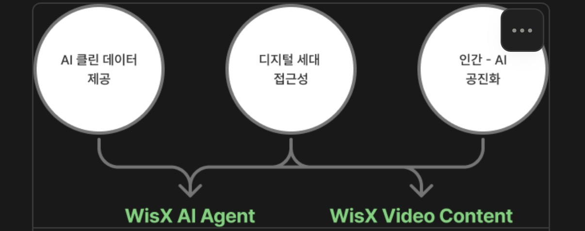

WisX 매뉴얼을 바탕으로 고전의 지혜를 담은 AI를 어떻게 구현할지 정리한 문서. 2026-01-26 정기 미팅의 아이디에이션 내용을 구조화했다.
고전의 지혜가 담긴 텍스트 = 신뢰할 수 있는 클린 데이터
젊은 세대가 친숙한 형태(에이전트·영상)로 지혜를 전달
상호작용 데이터로 함께 학습·성장하는 관계
WisX AI의 컨셉이 모두 반영된 AI 에이전트를 구성·배포한다. 아래는 멀티 에이전트 구조 예시.
WisX AI의 이야기를 영상 콘텐츠로 만들어 영상 플랫폼에 업로드한다.
